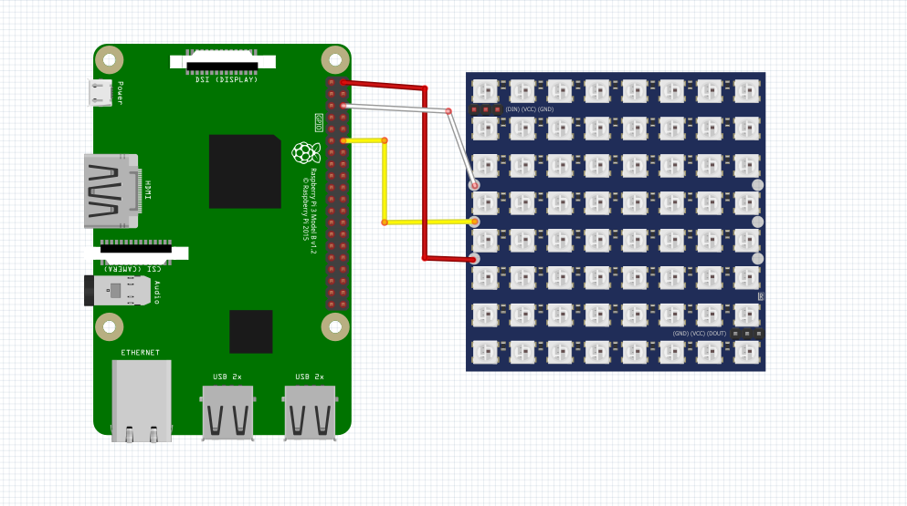

en la matriz led sera posible crear secuencias de acuerdo a lo que necesites, todo con la variedad de leds disponibles
import RPi.GPIO as GPIO
import time
# Definir los pines GPIO
DATA_PIN = 18
# Configurar el modo de la GPIO
GPIO.setmode(GPIO.BCM)
# Configurar el pin de datos como salida
GPIO.setup(DATA_PIN, GPIO.OUT)
# Función para enviar un byte de datos a la matriz LED
def enviar_byte(byte):
for i in range(8):
bit = (byte >> i) & 1
GPIO.output(DATA_PIN, bit)
time.sleep(0.001) # Esperar un breve periodo de tiempo
# Encender todos los LEDs de la matriz
def encender_matriz():
for fila in range(8):
byte = 0xFF # Todos los bits en 1 para encender todos los LEDs
enviar_byte(byte)
# Apagar todos los LEDs de la matriz
def apagar_matriz():
for fila in range(8):
byte = 0x00 # Todos los bits en 0 para apagar todos los LEDs
enviar_byte(byte)
# Ejemplo de uso: Encender y apagar la matriz
encender_matriz()
time.sleep(2) # Mantener la matriz encendida durante 2 segundos
apagar_matriz()
# Limpiar la configuración de la GPIO
GPIO.cleanup()

Realizado por Christopher Eduardo Barrientos Guerra